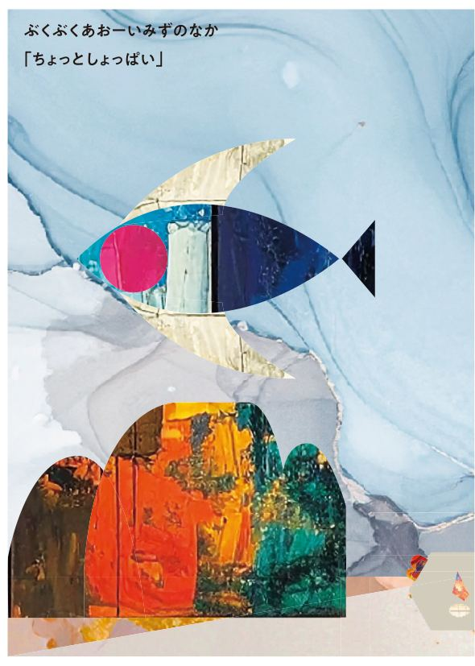
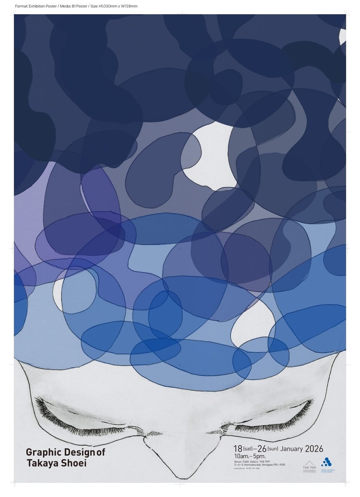

対話力
人と話すことが得意です。自分から関わり、相手との距離を縮めることを大切にしています。
人との対話、状況を見極める観察力、そしてデザインで培った思考力。私が大切にしてきたことと、農業を支える仕事で実現したい未来を紹介します。
初めてのことに慎重だった自分が、大学での学びや人との関わりを通して身につけてきた力です。
人と話すことが得意です。自分から関わり、相手との距離を縮めることを大切にしています。
相手や周囲の状況をよく見て、何が必要かを考える姿勢があります。
物事の目的を掘り下げ、情報を整理し、自分なりの形で伝える力を磨いてきました。
家族が農業を営んでおり、農業を支える仕事に関わりたいという思いを持つようになりました。
大学では時間をかけてデザインと向き合い、見た目だけでなく、目的や伝えたいことを理解して制作する姿勢を学びました。
継続して働いてきた経験があります。人と関わる場面での学びを、これからの仕事にも活かしたいと考えています。
現場によって作業の難しさや進めやすさが違うことを実感しました。機械の組み立て順を変えて効率化する工夫を見て、何より事前準備が重要だと学びました。
インターンシップを通して感じた、営業職を目指すうえでの大切な気づきです。
デザインの目的を考え、使う人・見る人の体験を形にしてきました。異なる表現方法の作品を2点紹介します。
一人旅の行程や目的地、写真、感想をひとつにまとめるWebアプリ。旅の途中でも迷わず使える情報の配置や、海をイメージした色使いを考えました。実際に画面を操作してご覧いただけます。

色や形、質感を組み合わせて、ページをめくることで物語が進む絵本を制作しました。言葉の響きと視覚表現の関係を考え、色彩や余白、画面の変化で世界観を伝えています。

第一希望は農機部門の営業職です。製品を売ることだけをゴールにせず、農家の方々の仕事を理解したうえで、長く頼ってもらえる存在を目指します。
製品の知識と現場での経験を積み、農家ごとの作業環境や課題を知る。
対話を通じて要望をくみ取り、導入前から導入後まで安心して相談してもらえる営業になる。
伝え方を工夫し、製品の特徴や導入するメリットを分かりやすく届ける。
農家の声を社内に届け、より良い製品やサービスにつながる働きかけをする。
※このサイトは応募者本人の経験・目標を紹介する個人制作ページであり、山本製作所の公式サイトではありません。
話す力だけでなく、相手を理解する力を磨き続けたい。デザインで培った視点も活かしながら、農業の現場に向き合っていきます。